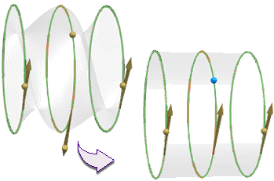
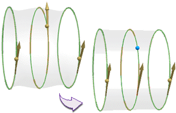

对话框中的截面组允许选择点、曲线或者边来组成定义通过曲线组特征的截面线串。
各个截面的方向箭头表示截面的方向，箭头的起始点是在原始曲线的起始位置。
反向可以用来反转所选截面线串的方向，而保持起始位置不变。

指定原点曲线允许指定线串中的起始曲线，只有当线串为封闭时，这个选项才可以使用。

添加新集将告诉 NX 下一条选择的曲线将作为一个新的截面线串。
列表列出了所选的(或正在选择的)截面线串，如果需要，可以通过重新排序或删除线串来修改截面线串集。